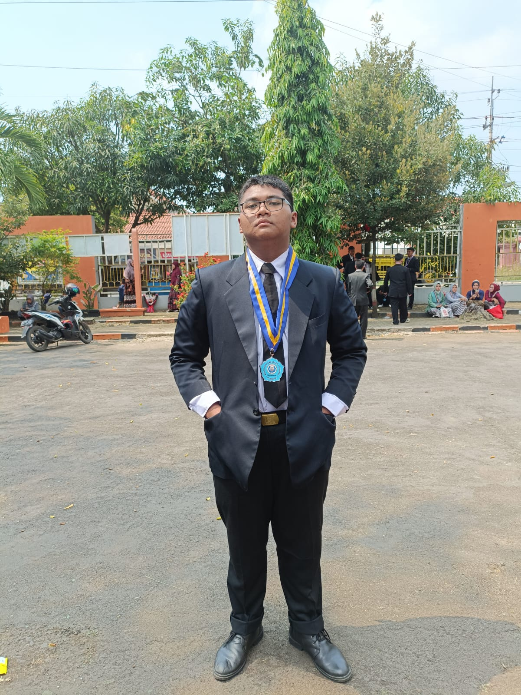

Profile
| NAMA | MUHAMMAD ALFI RAMDHANI |
|---|---|
| NIM | 10123303 |
| KELAS | IF 7 |
 Instagram
Instagram
Runeterra (yang berarti bumi ajaib) adalah suatu dimensi yang terdiri dari dunia fisik: sebuah planet berbentuk oblate spheroid dan Spirit Realm. Ini juga merupakan dunia fiksi di mana sebagian besar kisah dalam waralaba League of Legends dan Legends of Runeterra terjadi. Runeterra adalah bagian dari alam semesta lebih besar Runeterra Prime. Benua yang diketahui saat ini yang membentuk planet ini adalah Valoran, Shurima, dan Benua Camavoran. Selain itu, terdapat beberapa badan air besar seperti Laut Penakluk dan Laut Penjaga, serta 2 Samudra dengan beberapa kepulauan dan pulau di sekitarnya seperti Ionia, dan Shadow Isles. Planet ini mengorbit di sekitar bintang tipe G sementara satelit bulan alami mengelilingi planet. Matahari dan bulan Runeterra juga memiliki ekivalen yang tercermin di Spirit Realm.
| NAMA | MUHAMMAD ALFI RAMDHANI |
|---|---|
| NIM | 10123303 |
| KELAS | IF 7 |
Instagram
Kekaisaran Shurima dulu pernah menjadi sebuah peradaban yang sangat berkembang yang membentang di padang pasir yang luas. Setelah era pertumbuhan dan kemakmuran tersebut, kehancuran ibu kota membuat kerajaan itu hancur berkeping-keping. Selama beribu-ribu tahun lamanya, cerita kejayaan Shurima semakin hilang ditelah waktu dan hanya menjadi mitos serta kepercayaan keturunannya saja.
Sebagian besar penduduk Shurima bersifat nomaden mencari seraup rejeki yang bisa mereka dapatkan. Mereka mendirikan tenda sebagai pos di sekitar oasis yang mereka temukan. Sementara itu, yang lainnya ada yang menjadi tentara bayaran atau sekedar mencari sisa-sisa harta masih tersisa di reruntuhan kuno. Sekarang mereka mulai dikendalikan oleh bisikan dari hati mereka yang paling dalam yang berkata bahwa Shurima akan segera bangkit lagi.
Berada di pusat benua, Piltover berdiri di tebing progres. Penemuan hextech bersinar dengan bisikan janji masa depan yang penuh kejayaan, dan dua ilmuwan brilian memimpin. Potensi sebesar itu bukan berarti tanpa pengorbanan, dan kegagalan bisa menjadi kehancuran saat para politikus bersaing demi kekuatan yang tidak mereka pahami. Ketika kerusuhan terjadi di Kota Bawah dan pergolakan membayangi, warga Piltover harus melindungi masa depan mereka … dengan segala cara.
Dalam bayang-bayang progres, jauh di bawah menara gading Piltover, Kota Bawah menanti. Udara di sana dipenuhi dengan teriakan dan asap, dan tiap lorong menghadirkan bahaya, hasrat … atau keduanya. Zaun dan Piltover dulunya satu, namun sekarang terpisah, dan melambangkan dua masyarakat yang berbeda. Banyak barang dari Piltover menemukan jalan masuk ilegal di pasar gelap Zaun, selain itu peneliti Hextech dengan ide gila yang biasanya dilarang di Piltover juga selalu menemukan tempat baru di Zaun. Itulah sebabnya, penelitian-penelitian ilegal yang dilakukan tersebut membuat Zaun tercemar dan dalam keadaan bahaya. Aliran limbah beracun mematikan beredar di mana-mana layaknya sebuah kota kumuh. Tapi memang hal itulah semua orang di sini bisa berkembang dan membuktikan keberadaannya pada dunia.
Mount Targon adalah tempat dengan titik ketinggian tertinggi di Runeterra, sebuah puncak batu yang menjulang bagai terbakar api matahari lebih panas dari tempat mana pun di dunia ini. Terletak jauh dari peradaban, Mount Targon menyimpan suatu hal yang banyak orang kira mustahil. Banyak sekali cerita legenda tentang Mount Targon, dan, seperti tempat mistis lainnya, tempat itu adalah sebuah jembatan untuk para pemimpi, orang yang berkhayal terlalu tinggi, serta mereka sang petualang. Beberapa orang pemberani pernah mencoba untuk memanjat gunung itu, mungkin mencari kebenaran dan pencerahan dalam hidup mereka, atau mungkin mengejar kejayaan hingga hanya sekedar membuktikan mitos. Pendakian ini mungkin dinilai mustahil, dan mereka yang berhasil mencapai puncaknya tidak pernah berkata apapun tentang apa yang mereka lihat di atas sana. Ada yang kembali dengan perasaan hampa, tatapan mata kosong. Ada juga yang berubah hidupnya karena diberkati oleh the Aspect, sebuah kekuatan di luar nalar manusia yang bisa mereka dapatkan.
Demacia adalah tempat dengan hukum terkuat serta militer yang dijadikan sebagai senjata andalan mereka. Idealisme yang dianut oleh setiap warganya membuat mereka banggakan hukum dan juga kehormatan. Demacia layaknya sebuah negara yang bisa berdiri sendiri, masyarakatnya hidup agrari. Sumber daya alam melimpah, pertanian subur, hutan lebat, gunung yang kaya akan mineral. Mereka hidup bertahan dan tidak peduli atas apa yang terjadi di luar sana, karena begitulah cara peradaban mereka hidup. Beberapa orang beranggapan bahwa masa keemasan Demacia sudah berlalu kecuali mereka mampu beradaptasi dengan perubahan di dunia ini, yang mana hal yang terlihat sulit untuk diwujudkan. Namun jauh dari semua hal itu, Demacia tetaplah negara dengan dominasi terkuat dan terbesar di Valoran, paling elit, bahkan dengan pasukan terbaik di seluruh penjuru Runeterra.
Noxus adalah sebuah kerajaan yang sangat kuat dengan reputasi yang menakutkan. Kepada mereka yang bukan merupakan bagian dari Noxus, sisi brutal dan ancaman akan selalu menyelimuti. Berperang sepertinya kata pertama yang para penduduk asli Noxus dengar ketika terlahir dulu. Mereka memang dibekali bakat lebih untuk hal yang satu itu. Dulunya penduduk Noxus sama seperti manusia lainnya, sampai akhirnya mereka menyerbu sebuah kota kuno yang sekarang terletak di jantung kerajaan mereka. Dari sana, mereka selalu berjuang untuk melawan musuhnya bahkan hingga merebut tempat tinggal mereka untuk dijadikan sebagai wilayah kekuasaan Noxus. Itulah hal yang terus menerus mereka lakukan setiap tahunnya. Begitu kerasnya kehidupan setiap orang di Noxus, kekuatan mereka juga semakin terasah. Tapi sayang, tidak semuanya digunakan di jalan yang semestinya. Semua orang bisa menjadi orang yang sangat dihormati dan juga ditakuti di Noxus jika mereka memiliki bakat yang memikat dan bisa diandalkan tanpa perlu memandang status sosial, latar belakang, tanah air, atau juga kekayaan.
Ionia adalah tempat di mana sebagian besar wilayahnya masih diselimuti oleh keindahan dan juga sihir. Penduduknya yang banyak sekali tinggal tersebat di seluruh penjuru wilayah ini menganut kekuatan spiritual untuk hidup dalam harmoni dan keseimbangan dengan dunia ini. Banyak sekali kelompok dan juga sekte yang tersebar di Ionia dengan tujuan dan juga misi yang mereka embang masing-masing. Ionia besar dalam status isolasi dari Valoran itu sendiri. Mereka tetap netral menghadapi invasi yang dilakukan oleh Noxus. Konflik besar-besaran itu menyebabkan Ionia untuk berpikir kembali tentang jalan yang akan mereka tempuh untuk terus bisa bertahan. Sampai sekarang, belum ada yang tahu akan menjadi seperti apa. Tapi jika hal itu telah terjadi, maka hal tersebut akan menjadi hal yang besar sekali pengaruhnya di Runeterra.
Freljord merupakan tempat yang keras dan tak kenal ampun. Rakyatnya sangat menjungjung prinsip untuk berdiri sendiri, karena mereka bangga dan yakin bahwa mereka dilahirkan sebagai seorang ksatria. Satu hal, budaya mereka tidak pernah terlepas dari hal perampokan. Di sini, banyak sekali suku dan ada sering terjadi permusuhan antara tiga belah pihak yang menuntun kepada masa depan Freljord itu sendiri. Satu suku begitu menghormati tradisi sebagai pegangan hidup; satu suku lainnya bertekad untuk menjungjung masa depan yang sudah diramalkan, mereka dikenal dengan istilah idealis; dan yang terakhir adalah mereka yang terlahir dalam lingkungan pemujaan kekuatan penyihir misterius.
Sebuah pulau yang dikenal dengan nama Shadow Isles, dulunya adalah sebuah tempat yang sangat indah bernama Blessed Isles, namun ternoda oleh energi sihir yang tak terkendali. Kabut hitam menyelimuti pulau ini dan tak akan pernah hilang. Mereka yang hidup di sana akan tersedit jiwanya oleh kegelapan yang menggerayangi seluruh penjuru pulau, sampai kemudian mengubah mereka semua menjadi mayat hidup. Mereka yang mati termakan oleh kabut hitam the Black Mist akan selamanya menghantui tempat ini dalam kesedihan yang tidak akan pernah berakhir. Lebih buruk lagi, kekuatan Shadow Isles menjadi semakin kuat setiap tahunnya, sehingga semakin lama semakin membuat jarak penyebaran aura kegelapannya semakin luas, dan bukan tidak mungkin untuk membuat seluruh Runeterra menjadi bagiannya.
Banyak sekali pendapat yang berbeda soal di mana letak para Yordle tinggal. Beberapa ada yang bilang bahwa mahluk itu tinggal jauh di tenggara, melewati banyak sekali pegunungan. Ada juga yang berkata bahwa Yordle tinggal di bukit yang hijau jauh di dalam hutan yang tidak akan pernah bisa kalian temukan. Mungkin mereka benar, dan mungkin juga tidak, karena memang tidak ada yang pernah melakukan ekspedisi tentang di mana letak pastinya. Hal itu secara tidak langsung juga menyatakan bahwa memang tidak pernah ada yang pernah datang ke rumah para Yordle. Meskipun ada juga yang berkata bahwa butuh menembus portal misterius tertentu untuk bisa mencapainya, karena mereka memang begitu dilindungi. Di Bandle City, semua hal adalah hal yang sangat mengejutkan untuk orang luar. Misalnya saja minuman aneh dengan warna-warna yang begitu hidup, yang sekali kalian minum, rasanya tidak akan pernah bisa kalian lupakan. Cahaya matahari bersinar emas, air sebening kristal, dan setiap benih yang ditanam menghasilkan buah yang sangat manis. Di sana, sihir dilarang karena bisa menuntun mereka pada kehancuran. Mereka yang berkata pernah berkunjung ke Bandle City mungkin telah mengarungi ruang dan waktu yang tidak sebentar, sehingga mungkin mereka yang bercerita sudah berumur atau bahkan mati karena tidak pernah kembali sama sekali.
Berlokasi di kepulauan Blue Flame Isles, Bilgewater adalah kota pelabuhan yang taka ada duanya, rumah dari para pemburu ular, gang pelabuhan, dan penyelundup dari seluruh dunia. Di sini, kekayaan dan ambisi dibuan dan hancur dalam sekejap. Untuk mereka yang ingin melarikan diri dari keadilan, hutang, atau hukuman, Bilgewater dapat menjadi tempat permulaan baru, karena tak ada yang peduli dengan masa lalu di jalanan ini. Bahkan, di setiap fajar baru, pelancong yang ceroboh selalu ditemukan mengapung di pelabuhan, dengan tasnya yang kosong dan tenggorokan tersayat...
Meski sangat berbahaya, Bilgewater dipenuhi peluang, terlepas dari belenggu pemerintah formal dan aturan perdagangan. Jika punya uang, Anda hampir bisa membeli apa saja di sini, mulai dari Hextech terlarang hingga bantuan bos criminal lokal.
Terkenal karena penguasaan sihir unsurnya, Ixtal adalah salah satu negara merdeka pertama yang bergabung dengan kerajaan Shuriman. Sebenarnya, budaya Ixtali jauh lebih tua, bagian dari diaspora besar ke arah barat yang melahirkan peradaban termasuk Buhru, Helia yang agung, dan para pertapa Targon—dan kemungkinan besar mereka memainkan peran penting dalam penciptaan Ascended pertama.
Tapi para penyihir Ixtal selamat dari Void, dan kemudian Darkin, dengan menjauhkan diri dari tetangga mereka, menggambar hutan belantara di sekitar mereka seperti perisai. Meskipun banyak yang telah hilang, mereka berkomitmen untuk melestarikan apa yang tersisa…
Kini, terpencil jauh di dalam hutan selama ribuan tahun, kota arkeologi Ixaocan yang canggih sebagian besar tetap bebas dari pengaruh luar. Setelah menyaksikan dari jauh kehancuran Pulau Terberkati dan Perang Rune yang terjadi setelahnya, suku Ixtali memandang semua faksi lain di Runeterra sebagai orang baru dan orang yang berpura-pura, dan menggunakan sihir mereka yang kuat untuk mencegah penyusup.
Berteriak dan terwujud dengan kelahiran alam semesta, Void adalah perwujudan kekosongan yang tidak diketahui entah dari mana. Kekuatannya adalah rasa lapar yang tak terhingga, menunggu hingga tuannya, sang Watchers yang misterius, tandai waktu akhir kemunduran.
Untuk menjadi manusia yang disentuh kekuatannya adalah melalui siksaan dari sekilas realitas palsu yang abadi, cukup untuk merobohkan bahkan pikiran terkuat. Penghuni alam Void sendiri adalah makhluk konstruksi, seringkali hanya makhluk hidup terbatas, tapi ditugaskan satu hal—untuk membawa kehancuran pada Runeterra.
Ruination: A League of Legends Novel adalah novel yang dirilis oleh Riot Games Inc. pada 6 September 2022. Novel ini terutama berfokus pada Ruination of Helia dan peristiwa-peristiwa yang mendahuluinya dari sudut pandang Kalista, Thresh, dan Viego.
Camavor adalah negeri brutal dengan warisan berdarah. Ke mana pun para ksatria kekaisaran pergi, pembantaian pun terjadi.
Kalista berupaya mengubahnya. Ketika pamannya yang muda dan narsis Viego, menjadi raja, dia bersumpah untuk meredam naluri destruktifnya, sebagai orang kepercayaan, penasihat, dan jenderal militer yang setia. Namun rencananya digagalkan ketika pedang beracun seorang pembunuh menyerang istri Viego bernama Isolde, menimpanya dengan penyakit yang belum ada obatnya.
Saat kondisi Isolde memburuk, Viego menjadi gila dan sedih, mengancam akan menyeret Camavor bersamanya. Kalista membuat langkah putus asa untuk menyelamatkan kerajaan: dia mencari Blessed Isles yang telah lama hilang, yang dikabarkan menjadi tempat penyelamatan ratu, jika Kalista dapat menemukannya.

K/DA adalah sebuah grup vokal perempuan K-pop virtual terdiri dari empat versi dari karakter League of Legends Ahri, Akali, Evelynn dan Kai'Sa. Evelynn dan Kai'Sa masing-masing diisi suaranya oleh penyanyi Amerika Madison Beer(Bea Miller pada single Baddest) dan Jaira Burns(Wolftyla pada single Baddest), sementara Ahri dan Akali diisi suaranya oleh para anggota (G)I-dle Miyeon dan Soyeon. K/DA dikembangkan oleh Riot Games, perusahaan dibalik League of Legends, dan diluncurkan di League of Legends World Championship 2018 dengan pementasan panggung realitas tertambah dari lagu perdana dan satu-satunya milik mereka, "Pop/Stars". Sebuah video musik yang diunggah ke YouTube kemudian menjadi viral, ditonton sebanyak 300 juta kali, dan memuncaki tangga lagu World Digital Song Sales dari Billboard.
Lagu-lagu K/DA yang viral:"Gods" (dalam huruf kapital semua), dibawakan oleh NewJeans , diumumkan sebagai lagu tema turnamen. Sebuah boyband virtual bernama "Heartsteel" (bergaya huruf kapital semua) diresmikan oleh Riot Games selama acara tersebut, dengan Baekhyun dari Exo dan SuperM , ØZI , Tobi Lou dan Cal Scruby mewakili grup tersebut sebagai rekan manusianya dan dalam penampilan live lagu debut mereka.
Lagu-lagu Heartsteel yang viral:Pentakill adalah band heavy metal virtual yang terkait dengan dunia League of Legends. Musik mereka terutama disusun dan dibawakan oleh tim musik internal Riot Games tetapi menampilkan akting cemerlang dari berbagai musisi metal terkenal. Album kedua mereka, Grasp of the Undying , mencapai Nomor 1 di tangga lagu metal iTunes pada tahun 2017. Album ketiga mereka III: Lost Chapter ditayangkan perdana menggunakan konser "live" interaktif.
Lagu-lagu Pentakill yang viral:True Damage adalah sebuah grup vokal virtual bergenre hip hop yang beranggotakan lima karakter permainan video League of Legends. Akali dan Ekko sebagai rapper, Qiyana dan Senna sebagai vokalis, dan Yasuo sebagai DJ. Dalam kehidupan nyata, kelima karakter tersebut diperankan dan diisi suaranya oleh Soyeon (G)-ILDE sebagai Akali, Becky G dan Keke Palmer masing-masing sebagai Qiyana dan Senna, DUCKWRTH dan Thutmose bebarengan mengisi suara Ekko. True Damage merupakan grup musik ketiga setelah Pentakill dan K/DA yang dikembangkan oleh Riot Games, perusahaan pengembang permainan League of Legends.
True Damage pertama kali menampilkan lagunya yang berjudul GIANTS menggunakan teknologi hologram dan augmented reality pada 10 November 2019 yang bertepatan dengan pembukaan laga final gelaran kompetisi League of Legends World Championship 2019. Pada saat bersamaan lagu tersebut dirilis di platform Spotify, Deezer, Apple Music, dan YouTube. Dalam 24 jam setelah perilisan di situs YouTube, musik video GIANTS yang dibuat oleh Riot Games dan The Line Animation mendapat sekitar 6 juta penonton. Lagu GIANTS juga berhasil menempati posisi puncak lima belas Penjualan Lagu Digital Rap dan posisi puncak sembilan belas Penjualan Lagu Digital R&B/Hip-hop Billboard charts selama masing-masing satu minggu pada November 2019
Lagu-lagu True Damage yang viral:Arcane (ditampilkan sebagai Arcane: League of Legends) adalah serial televisi streaming aksi-petualangan animasi yang dibuat oleh Christian Linke dan Alex Yee untuk Netflix. Ini diproduksi oleh studio animasi Prancis Fortiche dibawah pengawasan Riot Games. Bertempat di dunia fiksi League of Legends Riot, ini terutama berfokus pada kedua saudara perempuan Vi dan Jinx. Serial ini diumumkan pada perayaan ulang tahun ke-10 League of Legends pada tahun 2019, dan pertama kali dirilis pada November 2021. Menyusul akhir dari musim pertama, Riot Games dan Netflix mengumumkan bahwa musim kedua sedang dalam produksi.
Musim pertama Arcane dirilis dengan pujian kritis, dengan pujian diarahkan pada animasi, cerita, pembangunan dunia, urutan aksi, karakter, bobot emosional, musik, dan akting suaranya. Beberapa telah mencatat daya tarik seri baik untuk penonton biasa yang belum pernah bermain League of Legends dan penggemar lama permainan.
link NETFLIX:Riot Games didirikan tahun 2006 untuk mengembangkan, meluncurkan, dan mendukung game paling memprioritaskan pemain di dunia. Pada tahun 2009, kami melakukan debut dengan League of Legends yang menuai pujian di seluruh dunia. League menjadi salah satu game PC yang paling banyak dimainkan di dunia dan penggerak penting dalam pesatnya pertumbuhan esports.
Di dekade kedua League, kami terus melakukan evolusi pada game dan membawakan pengalaman baru kepada pemain melalui Teamfight Tactics, Legends of Runeterra, VALORANT, League of Legends: Wild Rift, dan beberapa judul yang masih dalam tahap pengembangan. Selain itu, Riot Forge memberi para pengembang akses ke IP Riot untuk membuat game seperti Ruined King dan berbagai petualangan lainnya di seluruh Runeterra. Kami juga mengembangkan dunia Runeterra melalui beragam proyek multimedia termasuk musik, buku komik, permainan papan, dan Arcane, serial animasi pemenang Emmy Award.
Acara tahunan League of Legends World Championship menampilkan tim esports terpilih dari 12 liga internasional. Worlds adalah turnamen esports yang paling banyak ditonton dan diikuti, serta merupakan salah satu acara game dan olahraga terbesar sekaligus terpopuler di dunia.
Didirikan oleh Brandon Beck dan Marc Merrill, serta dipimpin oleh CEO Dylan Jadeja, Riot berkantor pusat di Los Angeles, California, dengan lebih dari 4.500 Rioter di lebih dari 20 kantor di seluruh dunia. Riot telah mendapat predikat sebagai Great Place to Work selama tiga tahun berturut-turut dan ditampilkan dalam sejumlah daftar penting termasuk "100 Best Companies to Work For", "25 Best Companies to Work in Technology", "100 Best Workplaces for Millennials", dan "50 Best Workplaces for Flexibility" dari Fortune.